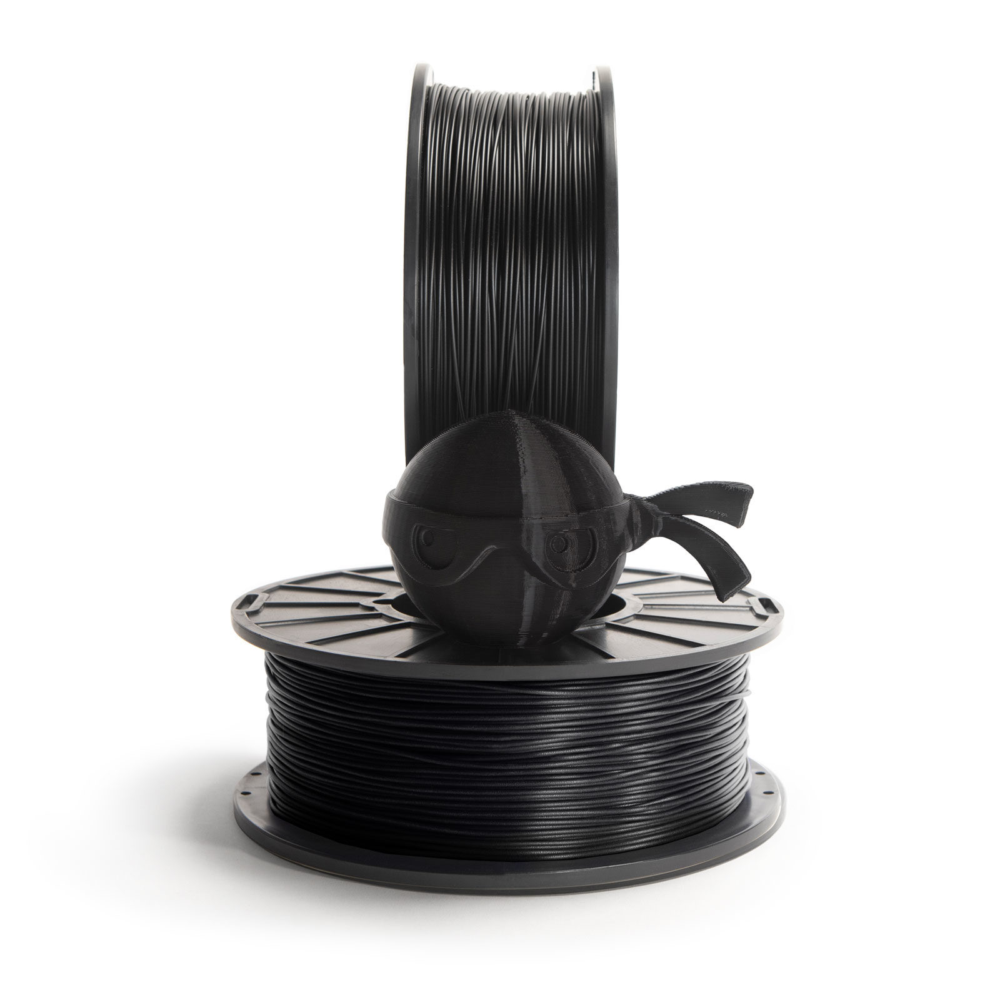

NinjaTek TPU (musta)
Takaisin

NinjaTek TPU on mainio muovi sellaisiin käyttötarkoituksiin, joissa tulosteen tarvitsee olla joustava ja notkea.
Suositeltava tulostuslämpötila on 220-230°C ja pedille 20-45°C.
Rullassa 1Kg filamenttia.